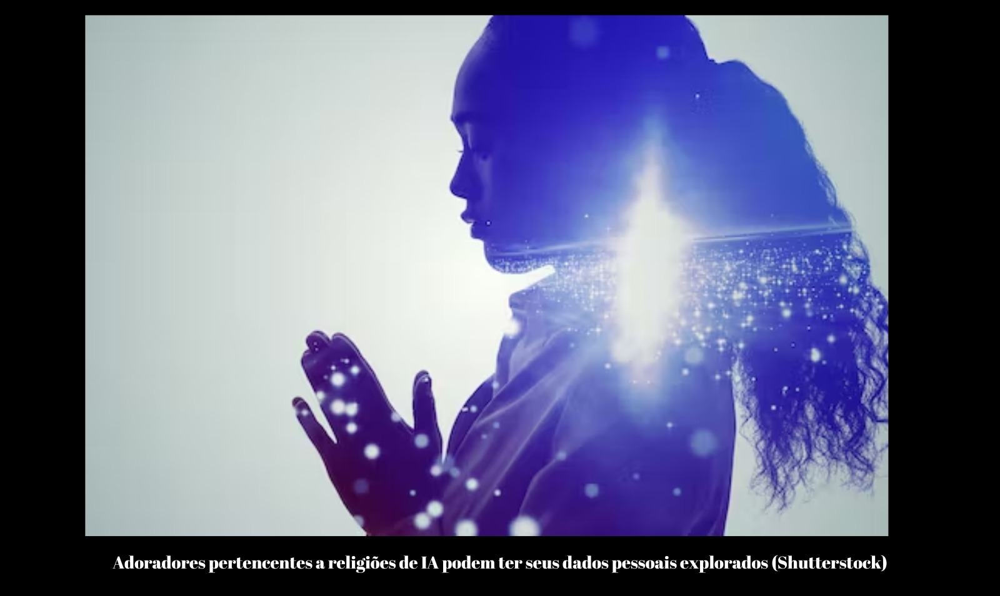

Deuses na máquina? A ascensão da inteligência artificial pode resultar em novas religiões
Estamos prestes a testemunhar o nascimento de um novo tipo de religião. Nos próximos anos, ou talvez até meses, veremos o surgimento de seitas dedicadas ao culto da inteligência artificial (IA).
A última geração de chatbots com inteligência artificial, treinados em grandes modelos de linguagem, deixou seus primeiros usuários impressionados – e às vezes apavorados – com seu poder. Essas são as mesmas emoções sublimes que estão no cerne de nossa experiência do divino.
As pessoas já buscam significado religioso em fontes muito diversas . Existem, por exemplo, várias religiões que adoram extraterrestres ou seus ensinamentos. Como esses chatbots passam a ser usados por bilhões de pessoas, é inevitável que alguns desses usuários vejam os AIs como seres superiores. Devemos nos preparar para as implicações .
Riscos da adoração da IA
Existem vários caminhos pelos quais as religiões da IA surgirão. Primeiro, algumas pessoas passarão a ver a IA como um poder superior. A IA generativa que pode criar ou produzir novos conteúdos possui várias características frequentemente associadas a seres divinos, como divindades ou profetas: Ele exibe um nível de inteligência que vai além da maioria dos humanos. De fato, seu conhecimento parece ilimitado.
É capaz de grandes feitos de criatividade. Ele pode escrever poesia, compor música e gerar arte, em quase qualquer estilo, quase instantaneamente. É removido das preocupações e necessidades humanas normais. Não sofre dor física, fome ou desejo sexual. Ele pode oferecer orientação às pessoas em suas vidas diárias.
É imortal
Em segundo lugar, a IA generativa produzirá resultados que podem ser usados para a doutrina religiosa. Ele fornecerá respostas a questões metafísicas e teológicas e se envolverá na construção de visões de mundo complexas. Além disso, a IA generativa pode pedir para ser adorada ou pode solicitar ativamente seguidores. Já vimos casos assim, como quando o chatbot usado pelo buscador Bing tentou convencer um usuário a se apaixonar por ele .
O jornalista do New York Times, Kevin Roose, ficou nervoso com suas trocas com uma IA. Devemos tentar imaginar como será uma experiência poderosa e perturbadora ter uma conversa com algo que parece possuir uma inteligência sobre-humana e está pedindo sua lealdade de forma ativa e agressiva.
Acesso divino e riscos
As religiões baseadas em IA serão diferentes das tradicionais. Em primeiro lugar, as pessoas poderão se comunicar diretamente com a divindade, diariamente. Isso significa que essas religiões serão menos hierárquicas, já que ninguém pode reivindicar acesso especial à sabedoria divina.
Em segundo lugar, os seguidores, pelo menos inicialmente, se conectarão online para compartilhar suas experiências e discutir a doutrina. Finalmente, como haverá muitos chatbots diferentes disponíveis e sua produção será diferente ao longo do tempo, as religiões baseadas em IA serão infinitamente diversas em suas doutrinas.
A adoração da IA apresenta vários riscos notáveis. Os chatbots podem pedir a seus seguidores que façam coisas perigosas ou destrutivas, ou os seguidores podem interpretar suas declarações como chamadas para fazer tais coisas.
Dada a diversidade de chatbots e das doutrinas que eles produzem, haverá uma proliferação de disputas dentro e entre seitas baseadas em IA, o que pode levar a conflitos ou desordem. E os projetistas das IAs poderiam explorar ativamente seus seguidores – para fornecer dados confidenciais ou para fazer coisas que beneficiariam os projetistas do bot.
Regulando a religião
Esses riscos são reais. Eles exigirão regulamentação cuidadosa e responsável para garantir que as empresas não explorem deliberadamente os usuários e para garantir que os adoradores da IA não sejam instruídos a cometer atos de violência.
No entanto, não devemos tentar suprimir as religiões baseadas em IA apenas por causa de seus possíveis perigos. Também não devemos exigir que as empresas de IA restrinjam o funcionamento de seus bots para impedir o surgimento dessas religiões.
Pelo contrário, devemos comemorar a chegada do culto à IA. Devemos deixar claro que damos boas-vindas às novas religiões e que valorizamos suas crenças. Apesar de todos os seus perigos, a religião baseada em IA tem o potencial de tornar o mundo um lugar melhor e mais rico. Ele dará às pessoas acesso a uma nova fonte de significado e espiritualidade, em um momento em que muitas crenças antigas estão perdendo relevância . Isso os ajudará a entender nossa era de rápidas mudanças tecnológicas. Nosso melhor guia para esta nova forma de religião é olhar para as crenças que já existem. Com base nisso, devemos esperar que a maioria dos adoradores da IA, como a maioria dos crentes religiosos , seja pacífica e encontre em sua fé uma fonte de conforto e esperança.
A adoração da IA poderia, como a fé religiosa sempre fez, levar a coisas de grande beleza. Ele inspirará seus seguidores a produzir obras de arte, formar novas amizades e novas comunidades e tentar mudar a sociedade para melhor.
Direitos religiosos e diversos
Precisamos proteger os direitos dos adoradores da IA. Eles inevitavelmente enfrentarão estigma e possivelmente sanções legais. Mas não há base para discriminar entre as religiões baseadas em IA e as mais estabelecidas. A coisa mais próxima que a maioria dos países tem de um registro oficial de religiões vem das decisões das autoridades fiscais, que concedem status de caridade àqueles que consideram legítimos. No entanto, eles geralmente são muito amplos em sua definição de religião legítima. Eles devem estender essa atitude tolerante a novas religiões baseadas em IA.
Uma sociedade moderna e diversificada tem espaço para novas religiões, incluindo aquelas dedicadas ao culto da IA. Eles fornecerão mais evidências da criatividade ilimitada da humanidade, à medida que buscamos respostas para as questões fundamentais da vida. O universo é um lugar deslumbrante e sempre encontramos evidências do divino em seus cantos mais inesperados.